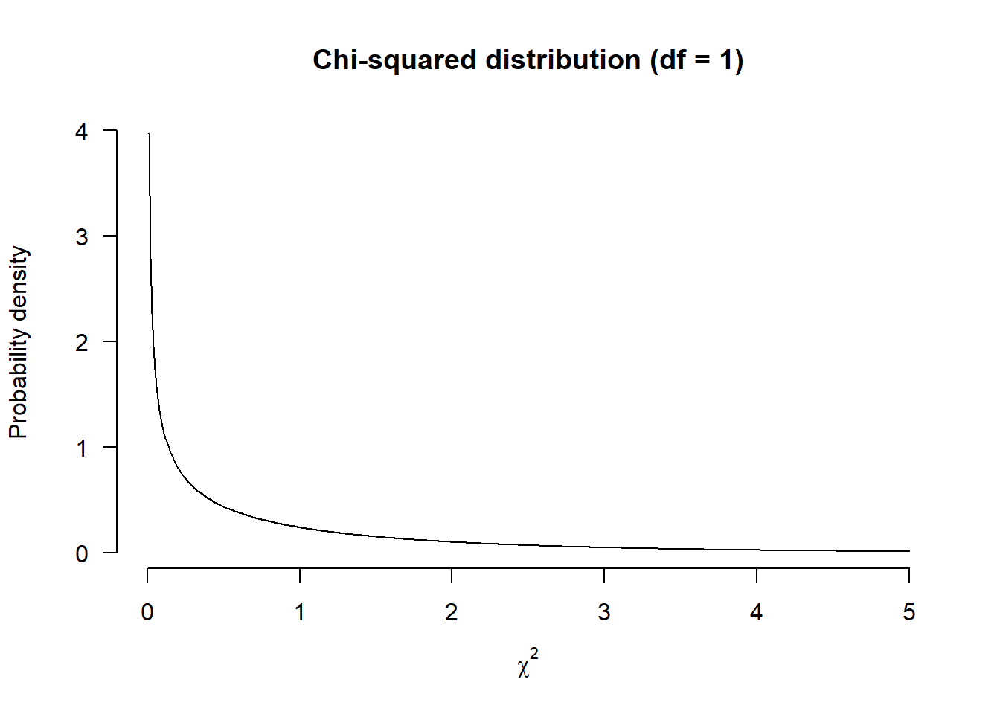

Chapter 8 Microbiology Experiment
Skills learned in this chapter: Study Design, Hypothesis Testing
8.1 Introduction
This is the explanation for first year biology students taking the microbiology course at Leiden University. The portfolio exercise itself is described all the way at the end.
The first exercise uses an example data set. In the second exercise, you are to use your own experimental data.
8.2 Study Design
In the microbiology assignment, you will design your own experiment, perform an analysis, draw conclusions and report your findings. That is a lot of work, so start planning in time!
Designing a study requires consideration of both biology and statistics: What question is the study supposed to answer? What kind of test or model is able to do so? What are the independent experimental units?6 How large should your sample size be?
To make it all feasible within the context of your microbiology course, let’s restrict ourselves to one particular kind of comparison: Differences in counts among groups. The first experiment is the same for all students:
- Is there a difference in the number of bacterial colonies counted on agar plates exposed to the air for an hour in the kitchen and the living room?
The experiment then looks something like this:
For the second experiment, feel free to come up with your own variation, but ask a course assistant or your teacher whether your research question is valid (and feasible). Also note that a more complex comparison may require a more elaborate study design and analysis! Try and keep it simple.
If you stick to bacterial counts in different groups, you can use a chi-squared test for the analysis, and a single agar plate per group. The chi-squared test is explained below, using an example data set.
8.3 Why Use a Statistical Test?
You could simply count the number of colonies on each plate, determine the differences and be done with it. So what’s the appeal of a statistical test?
In the example research question, we compare the number of bacterial colonies after exposure to different conditions (kitchen, living room). There are uncountably many potential influences that we cannot (perfectly) measure, or control. Think of:
- The amount of medium on each plate will always differ slightly;
- Temperature, humidity, airflow, and the amount of sunlight cannot be controlled precisely, but can be expected to affect the number of live bacteria falling onto the plate;
- Storage and transportation conditions can be logically expected to affect growth;
- Bacteria from your hand or breath might fall onto the plate, rather than bacteria floating in the air of the kitchen/living room;
- The number of bacteria in the air is likely to depend on the last time someone used the kitchen, the ventilation hood and any nearby windows;
- Low concentration bacteria in the air either will, or will not enter the plate by chance;
- You would probably count a different number of bacteria, had you chosen a different moment, or position in the kitchen.
And there are many other potential influences. Therefore, the exact count is hardly interesting. We aren’t so much interested in whether there is a difference, but rather whether there is large enough difference to be considered significant. A statistical test can help you decide on this.
Ideally, we would use a large number of replicates, so that we are not looking at the effect of a single, outlying observation (e.g. a particularly dirty kitchen). Therefore, in a later chapter we will reflect on the results of all students combined, and how we can best analyze those.
8.4 How Do Statistical Tests Work?
A statistical test works by taking on a statement of no difference and then collecting evidence against it.
This statement of no difference is called the null-hypothesis (\(H_0\)). If there is sufficient evidence against it, the null-hypothesis is rejected. What consitutes ‘enough’ evidence depends on what is considered an acceptable chance of a false positive (\(\alpha\)):
- Null-hypothesis (\(H_0\)): A statement of no difference;
- Level of significance (\(\alpha\)): What is an acceptable chance of a false positive?7
When counting bacterial colonies on plates from two plates, the null-hypothesis would be:
- \(H_0:\) There is no difference in the number of bacterial colonies on either plate.
A false positive would mean that you conclude a significant difference, even though the null-hypothesis is true. This can always happen, because a sample is just a random draw from the population,8 and can coincidentally be different from its population.
So which value should you choose for the level of significance (\(\alpha\))? That depends on your research:
- If we’re developing a diagnostic test for cancer, then a false positive could mean a a very serious operation for the patient. This means we have to be very strict about false positives. Even \(\alpha = 0.01\) would mean \(\frac{1}{100}\) healthy individuals would wrongly undergo treatment;9
- If we’re just counting bacteria in kitchens and living rooms, a false positive is not that consequential, and we can be less strict about what is significant.
Specifically, that means you could choose whatever value for \(\alpha\) you want. However, in biological journals, it is convention to go no higher than \(\alpha = 0.05\). That implies a chance of \(5\%\), or \(\frac{1}{20}\), of a false positive. Therefore, for this experiment, let’s use:
- \(\alpha = 0.05\)
When we conduct the test, it will result in a \(p\)-value. This is the chance that you would draw a sample with this large a difference, if the null-hypothesis were true. In other words, if there is no actual difference in bacteria in the air of your kitchen and living room, then what is the chance that you observed the difference of your experiment? If this chance is extremely small, then we reject the null-hypothesis.
Specifically:
- If \(p < \alpha\), reject \(H_0\);
- If \(p \geq \alpha\), there is insufficient evidence against \(H_0\).
An insignificant test does not demonstrate that there is no difference. It just means that your sample provides insufficient reason to reject the null-hypothesis. Nevertheless, the null-hypothesis is still only an assumption.
8.5 The Chi-Squared Test
Suppose we do the experiment and count:
- Kitchen: 21 kolonies;
- Living room: 15 kolonies.
Comparing observed to expected counts can be done with a \(\chi^2\)-test (chi-squared). This test looks whether the proportion of colonies counted on the plate from the kitchen and living room are equal.
8.5.1 How Does the Chi-Squared Test Work?
As you’ll see in the next section, performing the test is really easy with chisq.test().
Nevertheless, here I’ll explain what the test actually does, so you can see what it is we’re really doing. If you already know how it works, feel free to skip to the next section.
In short: A chi-squared test calculated the number \(\chi^2\) as shown below, and then calculates a corresponding \(p\)-value. If the \(p\)-value is lower than \(\alpha\), then there is a significant difference in the colonies counted in the kitchen and living room.
- \(\chi^2 = \displaystyle\sum_{i = 1}^k \frac{(\text{observed} - \text{expected})^2}{\text{expected}}\)
The expected numbers are the numbers under the null-hypothesis. These are simply equal to the average count:
- \(\text{expected} = \frac{21 + 15}{2} = 18\)
Now we can calculate \(\chi^2\):
- \(\chi^2 = \displaystyle\sum_{i = 1}^k \frac{(\text{obs.} - \text{exp.})^2}{\text{exp.}} = \frac{(\text{21} - \text{18})^2}{\text{18}} + \frac{(\text{15} - \text{18})^2}{\text{18}} = \frac{1}{2} + \frac{1}{2} = 1\)
You don’t have to know how to estimate a \(p\)-value from that number, but I can easily show it in a figure:

That is the chi-squared distribution with one degree of freedom (because we have two groups and calculated one value). This figure shows the distribution of values of \(\chi^2\) that you would expect to find if the null-hypothesis were true. De largest chance is a value of \(\chi^2 = 0\), and after that, the probability density decreases. The \(p\)-value answers the question: If the null-hypothesis is true, what is the chance of our \(\chi^2 = 1\) or higher?.
The \(p\)-value for \(\chi^2=1\) is the surface area under the probability distribution from \(1\) on:
That is \(31.7\%\), almost one third of the entire surface area, so we don’t have very convincing evidence against the null-hypothesis:
- If there is no difference in the population, the chance of \(\chi^2 \geq 1\) is \(p = 0.317\).
In this example, \(p > \alpha\), so we don’t reject \(H_0\). In the report we would write that there is insufficient evidence to conclude a difference in bacteria in the kitchen and living room from this experiment.
To calculate this value yourself, you would have to evaluate the integral of the chi-squared distribution from \(1\) to \(\infty\). I don’t recommend trying it by hand. Fortunately, we have R:
## [1] 0.3173105This says: \(1\) minus the chance of any value up till \(\chi^2=1\). And that is how we get \(0.317\).
8.5.2 Chi-Squared Test in R
If you think the explanation so far is a lot, I don’t blame you. It takes quite a lot of background knowledge to understand a simple test. The explanation of how the chi-squared test works will not be part of the microbiology exam. Nevertheless, I wanted to include it here, so that you can read what is going on when you use this test. Namely, it can all be done in a few seconds in R:
##
## Chi-squared test for given probabilities
##
## data: example
## X-squared = 1, df = 1, p-value = 0.3173That is all there is to it:
- R calculated a value of \(\chi^2 = 1\);
- It then says
df = 1, which means there is one degree of freedom: \(\text{number of independent observations} - \text{number of estimated parameters} = 2 - 1 = 1\); - Those things combined yield a \(p\)-value of
0.3173.
8.6 Exercises
Open the R markdown file “Exercises.Rmd” and answer the questions. The questions themselves are included here.
8.6.1 Performing a Chi-Squared Test
Suppose another student performs the same experiment and counts:
- Kitchen: 36 colonies;
- Living room: 21 colonies.
Use \(\alpha = 0.05\) and conduct a \(\chi^2\)-test for these data. You can use the code above and adapt it.
8.6.2 Comparing Two Students
Suppose we want to see if the counts are significantly different between two students:
| Kitchen | Living room | |
|---|---|---|
| Student 1 | 21 | 15 |
| Student 2 | 36 | 21 |
All a \(\chi^2\)-test does is compare observed to expected counts. You can apply this to contingency tables too. The test then determines the difference in the proportion of colonies in the kitchen and living room for student 1 and 2. You don’t have to calculate the expected counts by hand, but an explanation is given below for those interested.\(^\dagger\)
In R, all you have to do is put the data in a \(2 \times 2\) matrix, for example using rbind (row bind):
Student1 <- c(21, 15)
Student2 <- c(36, 21)
ContingencyTable <- rbind(Student1, Student2) # Create a 2x2 matrix
colnames(ContingencyTable) <- c("Kitchen", "Living Room") # Add column names
ContingencyTable # Print the result## Kitchen Living Room
## Student1 21 15
## Student2 36 21Then, simply use chisq.test() on the contingency table:
##
## Pearson's Chi-squared test with Yates' continuity correction
##
## data: ContingencyTable
## X-squared = 0.060876, df = 1, p-value = 0.8051This results in a \(p\)-value for the null-hypothesis:
- The difference in kitchen and living room is independent of which student performs the experiment.
With \(\alpha = 0.05\), what would you conclude?
\(^\dagger:\) For a contingency table, the expected counts are what you would expect if the relative counts of student 1 did not differ from student 2, proportional to their total counts:
| Kitchen | Living room | Kitchen | Living room | ||
|---|---|---|---|---|---|
| Student 1 | 21 | 15 | \(\frac{(21+36)(21+15)}{21+36+15+21}\) | \(\frac{(15+21)(21+15)}{21+36+15+21}\) | |
| Student 2 | 36 | 21 | \(\frac{(21+36)(36+21)}{21+36+15+21}\) | \(\frac{(15+21)(36+21)}{21+36+15+21}\) |
8.6.3 Comparing Two Other Students
Conduct the same test for the difference between two students using the real experimental data from your class. For example, you could compare the results with your lab partner’s. You can use the the previous exercise as an example.
An experimental unit is the smallest division of the sample that is still an independent part. Some example: In clinical trials, patients are experimental units; In a study on fertilizer effectiveness, plants are experimental units; In an experiment on antibiotic effectiveness, a single agar plate is an experimental unit.↩︎
A false positive occurs when you conclude a significant difference, even though there is no real difference in the underlying population from which the sample came. Example 1: If we conclude a medicine works significantly better than a placebo in the sample, but it does not actually work on average in the population, then we have a false positive for the effect of the medicine. Example 2: Say we estimate the ratio of black to white sheep in a large farm by drawing a random sample. A false postive would occur if in the sample, the ratio differed significantly from \(1 : 1\), even though it does not in the whole farm. False positives are also called type I errors.↩︎
The population here consists of all possible samples of air from your kitchen and living room.↩︎
Of course, in reality a diagnostic test for cancer is followed by further diagnosis to minimize the probability of this scenario.↩︎